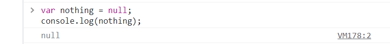

At its most basic level, a computer is a series of on and off switches, a set of 0s and 1s that flip back and flip in.
The concept of using binary values to represent information (0 and 1, true and false) is so fundamental along with most other programming languages,it also has a dedicated type to these values, referred to as a boolean.
Boolean values can be created by assigning a value of true or false to a variable.
var bool1 = true;
var bool2 = false;
Boolean values can also be created by using comparison operators, such as:
* Greater Than - >
* Less Than -
<< /span>
* Greater Than or Equal To - >=
* Less Than or Equal To -
<=< /span>
When you declare a variable, its value is initialized to whatever value you assign by using the = sign.
The following code snippet will initialize the variable as pi a number.
var pi = 3.14159265359;
But what if we created a variable that didn’t assign any value,like this
var declareVariable;
In this case, we will get declareVariable with an undefined value.
This means you have not assigned an value to the variable.
Variables with a null type, on the other hand, represent values that are intentionally empty. A null variable can be created by setting the variable equal to null.
Variables are only stored as undefined if they have been declared but not initialized with a value.
Null values intentionally are stored as null to indicate that the variable is empty. You should set a variable equal to null and only if the variable is expected to have no value.
If this isn’t making sense right now, it’s ok.
We will continue to touch on this concept in following explanation.
Now you have an understanding of the basic data types and operations, we should try to make our programs a little more interesting. We will do this by manipulating the way in which the Javascript program executes. One way we can accomplish this is through the use of functions.
Functions allow us to repeat tasks that involve a similar sequence of steps. You’ve already seen the console.log() function, which allows us to predictably log some output to the console.
Let’s look at an example of a function definition that finds the sum of two numbers:
var sum = function(x, y){
return x + y;
}
We start by creating a variable,then define a function by using the function(){} syntax.
Within the parentheses are a set of arguments, which are values that are used or manipulated by the function in some manner. If you have multiple arguments, they are each separated by a comma. A function can also have no arguments.
The code to be executed by the function lies within the curly braces ({}). If you expect the function to give back some value, it should include a return statement (which is done by using the keyword return), followed by the value you want to be returned. If you don’t expect your Javascript function to return a value, you do not have to include a return statement.
You may notice if you run the code above, nothing happens. In order to make use of our function, we must invoke or call the function.
A function is called like below:
functionName();
The parentheses together, (), are an operator that initiates a function call. If you have
arguments for the function to make use of, you must include those within the parenthesis.
Let’s make use of the sum function we just created:
var onePlusTwo = sum(1, 2);
var twoPlusTwenty = sum(2, 20);
console.log(onePlusTwo, twoPlusTwenty);
In this example, we make use of two different functions:
*the sum() function, where we pass two numbers as arguments
*the console.log() function, where we supply the newly created variables as
arguments
In both cases where we use sum(), numbers are passed, so the value returned will also be a
number. This
number is then placed into the console using console.log().
The reason to use functions is that they allow us to reuse code and create modules to perform procedures we plan on using repeatedly. Though the example above isn’t much more useful than just using the + operator, but you will see that functions are very useful as your code starts to get more complex.
Create a function named Subtract which allows values as two numbers and should return the result as number.
Hope you have a good understanding on functions . Let's see about conditions in the following explanation.
Let's see an real time example: